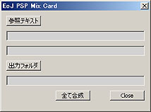

s000192_EoJ_PSP_MixCard

機能： 参照テキストを元に5種のデータを合成PSDフォーマットにて出力します。
機能説明：
参照テキスト： 合成パターンのテキストを選択
テキスト名 表示： 上記ボタンにて選択されたテキスト（.txt）名表示
フォルダ 表示： 上記ボタンにて選択されたテキストの在るフォルダ名表示
出力フォルダ 表示： 出力フォルダの選択
フォルダ 表示： 上記ボタンにて選択されたフォルダ名表示
全て合成 ボタン： 参照テキストに基づき合成、保存
Closeボタン： スクリプト終了
使用法：
合成パターンを記載したテキストを参照テキストボタンより選択。参照元のフォルダ及び参照テキスト
ファイル名が表示されます。
出力フォルダを選択します。出力フォルダボタンは参照テキストのフォルダに値が入ると使用可能になります。
参照フォルダからのコピペも可能です。
３つのテキストエディタを指定された後全て合成ボタンにて順にテキストに基づき合成、出力します。
仕様：
フォルダ構成：
参照テキストの存在するフォルダと並列に以下のフォルダを作成し対象データを入れて下さい。
例） 
素材PSDフォーマット：
各chara、card、flame、atta_num、mana_num、hp_numの素材にはPSDを使用。
処理速度の為以下の仕様になっています。
chara、flame、atta_num、mana_num、hp_num は背景レイヤー＋素材となるイメージ1レイヤーで構成。
card のみ背景レイヤー＋素材となるイメージ1レイヤー + アルファーチャンネルで構成。
※現要素では新カードは角の丸め等が無いのですが一応今後の変更に対応の為上記の仕様。
参照テキストファイルフォーマット：
一行に５つの要素となるテキストデータ（タブ区切り）。
但しスクリプト実行時は2行目から処理を開始します。テキストの1行目にて各要素の内容記載で判別しやすくしている為。
左からchara_ID、属性、使用マナ数、hp、攻撃力の並びになっています。
例） card_list.txt内の記載
キャラID 属性 使用マナ数 HP 攻撃力
211 火 1 1 1+
212 火 1 2 1
213 火 2 2 1+
現状の対応表：
metal earth wood water fire 使用PSD（地） spell none リスト記載文字 スor− 無 機巧 土 木 水 火
使用マナ数、hp、攻撃力は各対応数字と同じファイル名のデータを読み込んでいます。
マナ数 ０，１，２，３，４，５，６，７，８，９，１０，１２，X
ｈｐ １，２，３，４，５，６，７，８，９，１０，１２，−，１＋
攻撃力 ０，１，２，３，４，８，９，−，０＋，１＋，１・X，２＋，３＋，３・X，５−，５＋，７＋
上記はリストとの整合性を高める為これらの内容をチェックしますので数値が新規に追加される場合は
スクリプト内の記述に追加が必要となります。
なおリストとフォルダーのPSDに不一致があった場合はCard_data\ 下にerr_mess.txt が出力され
行数とエラー内容が記載されます。
スクリプト実行後の終了のメッセージ後に 「指定テキストに問題があります。」というエラーが出た場合は
テキストを参照してください。